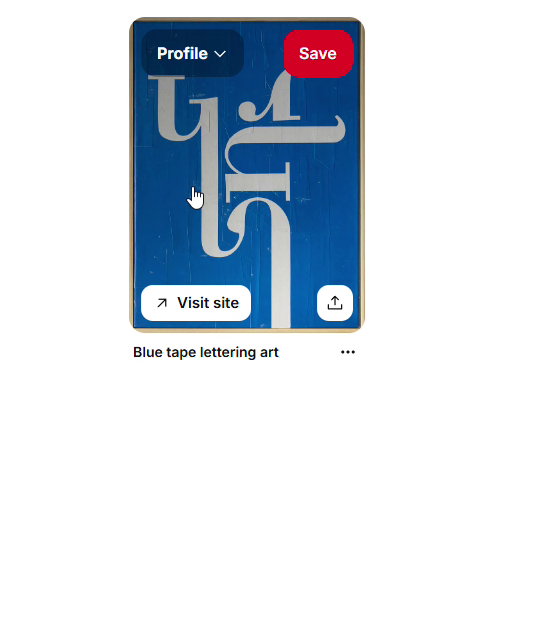
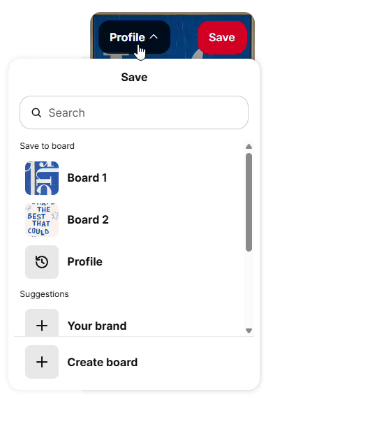

Microinteractions Final: The Pinterest "Pin" Card
Objects: A pin card in the Pinterest home feed/search results
grid (logged-in user), its board selector (the "Profile" button in the
top left), "Save" button, "Visit site" button, Share button, and "..."
button, and the menus that the board selector, Share, and "..."
buttons open.
Scope: Hovering on and off of the pin card and each of its
buttons, clicking "Save" to save and unsave the pin, clicking the
board selector, Share, and "..." buttons to open and close their
menus, and clicking outside an open menu to close it. Inside the
menus, only scrolling the board list is included; the boards, search
fields, share options, and menu options are shown but are not part of
this scope.


The Link
https://www.pinterest.com/
This link will open in a new tab. You will need a free account to
view the content and microinteractions.
Locating the Object
Once you are logged in, move your mouse onto any pin, then click its
board selector, Share button, or "..." button. In the current
version, these menus appear and disappear instantly, with no
transitions.